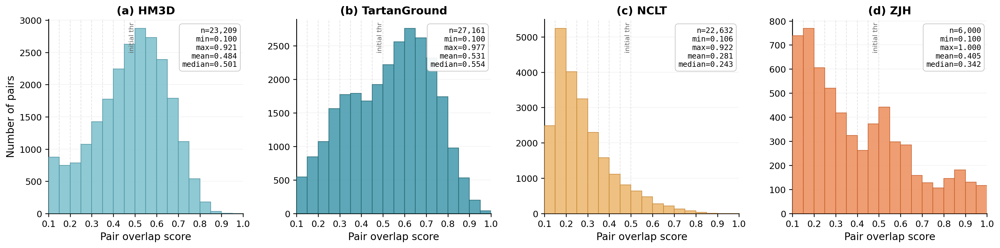
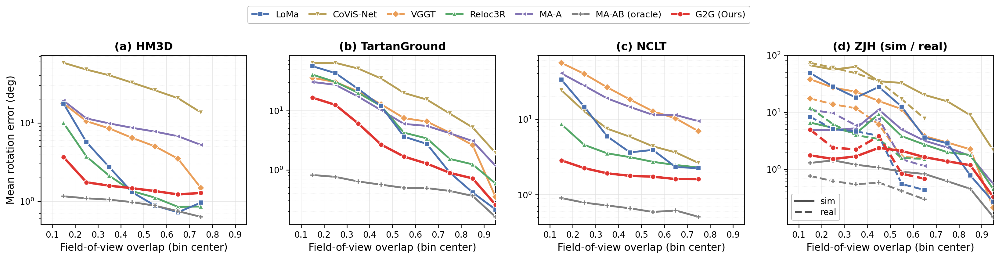
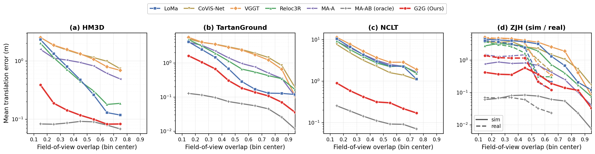
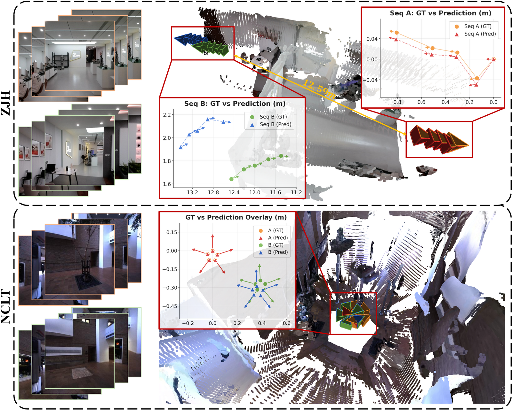

Recovering the relative 6-DoF pose between two image groups underlies cross-sequence relocalization and multi-camera rig odometry. Each group carries known intra-group geometry from visual odometry or rig calibration, and pretrained multi-view backbones already fuse such geometry into visual features. Yet current models treat all views as an unstructured set, leaving cross-group reasoning as the missing piece. We cast group-to-group pose estimation as a single unified problem that fully exploits the geometry within each image group, and introduce G2G, which keeps the multi-view foundation model entirely frozen so that its rich 3D representations are preserved rather than collapsing under fine-tuning. Three lightweight trainable modules bridge the two groups: a perceiver resampler, a cross-group bridge with merged self-attention, and a multi-frame pose head, together adding about 32M parameters (under 6% of the full model) and supervised only by relative poses. Across four datasets that span indoor and outdoor simulation, real-world cross-session capture with appearance change, and zero-shot sim-to-real transfer, G2G attains state-of-the-art accuracy on both tasks, while every baseline is retrained with its full original supervision.
Given two short sequences captured at different times, G2G recovers the relative pose that aligns them.
Loading table…
Two rigid camera rigs at consecutive timestamps; G2G estimates the inter-rig motion. Demos render one camera for clarity, while inference and pose prediction use the full multi-camera rig.
Loading table…
Orbit real reconstructions placed by G2G. In Relocalization, merge two sequences and compare predicted vs. ground-truth alignment. In Rig Odometry, stitch consecutive multi-camera rigs frame by frame.
WebGL is unavailable in this browser.
The interactive viewer needs WebGL. The static qualitative figures above show the same results.
Loading table…
Loading table…
Loading table…




@misc{wei2026g2gexploitingintragroupgeometry,
title={G2G: Exploiting Intra-Group Geometry for Inter-Group Pose Estimation},
author={Yufei Wei and Shuhao Ye and Chenxiao Hu and Yiyuan Pan and Dongyu Feng and Rong Xiong and Yue Wang and Yanmei Jiao},
year={2026},
eprint={2606.08284},
archivePrefix={arXiv},
primaryClass={cs.CV},
url={https://arxiv.org/abs/2606.08284},
}